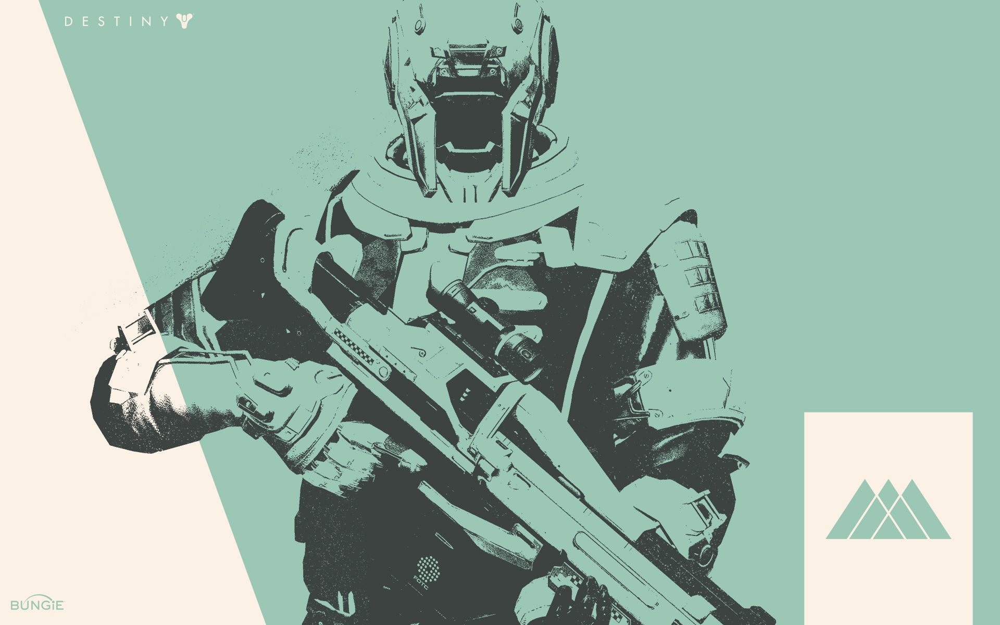

Warlocks are the ipitomy of a "jack of all trades" class. They are good at everything and can fit into any team in any activity in the game. The class with no downsides is a perfect way to describe warlocks.
As a Warlock you are a healer, a damage dealer, a damage support, any role that is in the game you can be as a warlock. You can be whatever role you please based on your loadout, armor, and subclass selection. The movement is slow and floaty to a person new to warlock but those who have experience with warlocks can rival all the other classes especially with warlock blink (teleportation).

As you warlock you swear to your bond (a piece of armor around your upper arm) and learn under your mentor Ikora Rey. Ikora is a master class human warlock who is fearless and couragous in every sense of the word. She does whatever she can to complete the mission and even though she can let her emotions get the best of her, she always ends up pulling through.
 Meet Ikora
Meet Ikora
Warlock armor takes warlocks from doing everything great and boosts one category to make them be the best at it. Armor from making you not reload and boost damage, armor that gives you back your super, armor that makes your super last longer, armor for more grenades etc. Warlocks are strong as is but their armor puts them in a spot to compete for any role that is needed for any activity.


So are you going to swear to your bond and become a warlock or are you on a search for something else?